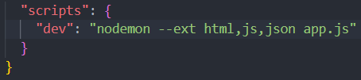

We talked alot about the different aspects of server-side rendering vs client-side rendering.
SSR gives faster intial load times. This is because the server can send pre-rendered HTML that we pre-build.
SSR is relevant for resource management. When we process things with SSR it reduces the stress on the client-side, which can be useful for example if it's a slow device they are using, resulting in much faster performance, since we are not bound by the device speed.
On the other hand we can reduce some stress on the server by using CSR and pushing some of the work off to the client.
For SEO(Search Engine Optimization) we talked a bit about how SSR provides benefits to SEO, but you can also get the same result with correct implementation with CSR. And we talked a bit about some other libraries like react have poor SEO handling, but have libraries to fix the same issues.
For CORS issues if we serve our HTML directly SSR solves all CORS issues for our own application. This isn't always good enough though since if we have outside API's we still need to handle CORS issues.
For reading files in JavaScript we need to import the in build file system on Node.js.
import fs from "fs";
We can chose to either read the fight synchronously or asynchronously. For reading the files asynchronously we have fs.readFile. For reading the files asynchronously we have fs.readFileSync.
Here's some examples of us using file reading in our application.
We use it in our templatingEngine to read in our HTML files from our public directory. Here we concatonate them together after they're read, so we can use the build HTML page in our router. Besides this i have personally used the Node.js file system to read in repositories from github. It's the best file system i've worked with so far between Java, JavaScript and C#, very intuitive, fast and easy error handling.
For nodemon we went over ext command in nodemon. With this we can set up a listener so it restarts on all the files we need it to. This is relevant because before it didn't restart on CSS & html changes i think it was. So what we did was first use the command in nodemon.
nodemon --ext html,js,json app.js
This was the first options after this we talked about after that we talked about how to set it up as a script. For this we have 2 options. We can either set it up with nodemon itself in a nodemon.json file we can create.
Or we can set up a script in our package.json where we normally set up scripts.
Redirection is about how we direct a user from one page to another.
We can redirect with either JavaScript on the client side with window.location.href = "/somePage", or we can redirect with server using res.redirect("/somePage").
Client-side redirection can reduce server load, while server-side redirections gives us consistency across devices and platforms. For server-side redirections we also get the option to use data on our server, for instance authentication or user roles.